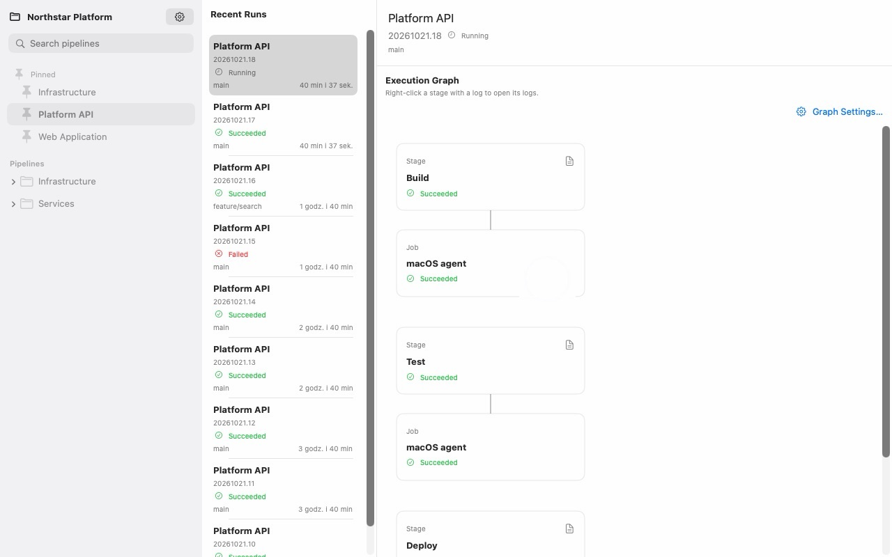
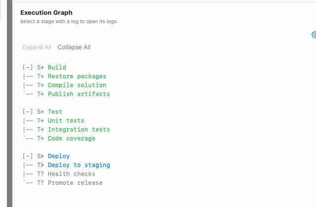
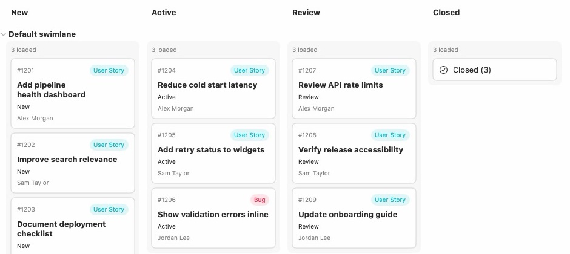

Keychain storage
Personal access tokens are kept in the macOS Keychain, scoped to one organization. Entra tokens stay in MSAL's own Keychain cache.
Azure DevOps Services, native on Apple platforms
Follow runs, read stage logs, and work through boards and work items in a native app built for macOS, iPhone, iPhone Duo and iPad.

Connects directly to
DevPulse reads the build timeline and draws it as stages, jobs and tasks. Stage order follows the compiled YAML of that exact run, so parallel branches sit side by side the way they executed.
Switch between a card graph and a text graph without leaving the run. The ASCII view keeps the same hierarchy and the same status colors, with markers for succeeded, running, failed and not started.

Browse a team board or a flat list of work items, filter by person, type and state, and open an item in its own window. Saving is always explicit, and Azure DevOps rules stay authoritative.
Edit fields, state and assignment, upload attachments, and stage relationship changes. Every save checks the baseline revision, so a conflicting change is caught before it overwrites someone else's work.

Track the pipeline you care about, or pin up to six exact runs, and read them without opening the app. The widget shows the current stage and how old the cached data is.
DevPulse talks to your Azure DevOps organization and to Apple's services. It has no developer-operated backend, no analytics, and no advertising SDK.
Personal access tokens are kept in the macOS Keychain, scoped to one organization. Entra tokens stay in MSAL's own Keychain cache.
Microsoft Entra sign-in uses the system authentication session. DevPulse never reads browser cookies or reuses the Azure DevOps web client's session.
A personal access token is never reused across organizations. Switching organization invalidates the old browsing identity and rechecks access with local credentials only.
DevPulse is written in Swift with SwiftUI, targeting macOS 27, iOS 27 and iPadOS 27. The same graph, the same boards, the same editor.
DevPulse is being prepared for the Mac App Store and is not yet publicly available there. The macOS build requires an Apple Silicon Mac running macOS 27 or later, an Azure DevOps Services organization, and internet access.
Microsoft Entra sign-in needs an application registration. A personal access token works without one, and is the quickest way to try the app.